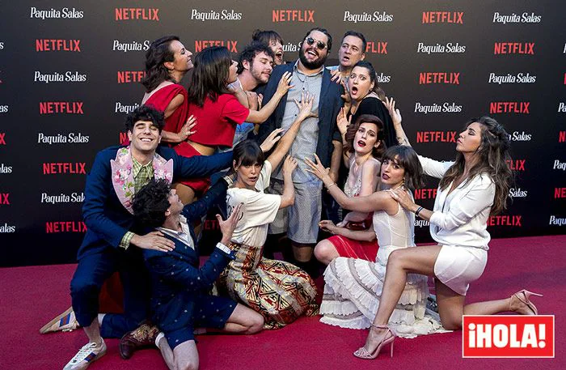
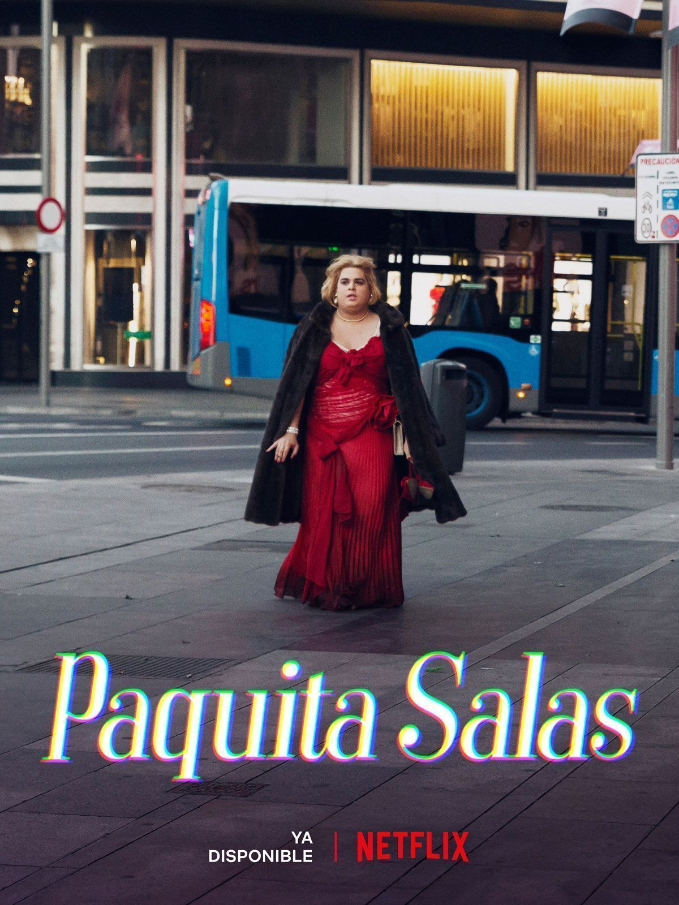

Proyecto 1: Casting Épico
En este proyecto, Paquita organiza un casting memorable para descubrir nuevos talentos. Una producción llena de humor y momentos icónicos.
Proyecto 2: Paquita Salas Gourmet
En etapas más avanzadas de la serie, la agencia se reinventa como Nuevo PS, un concepto de "agencia gourmet" inspirado en el modelo de El Corte Inglés: pocos productos (actores), pero de altísima calidad y con una presentación muy cuidada. Sus clientes estrella en esta fase incluyen a Lidia San José y Belinda Washington.

Proyecto 3: Estreno de Serie
Paquita supervisa el estreno de una nueva serie, asegurando que cada actor alcance su máximo potencial y que el éxito sea rotundo.